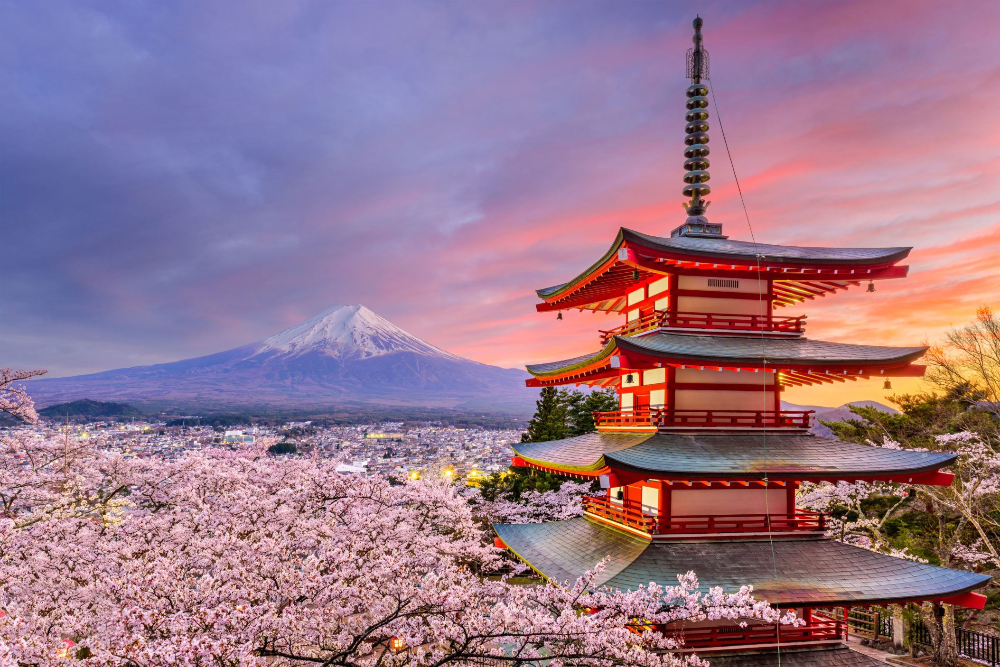
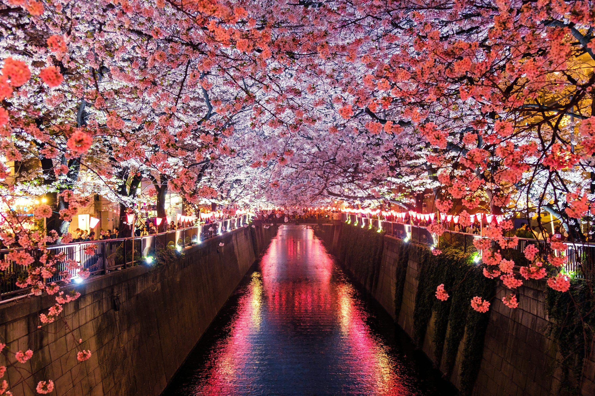
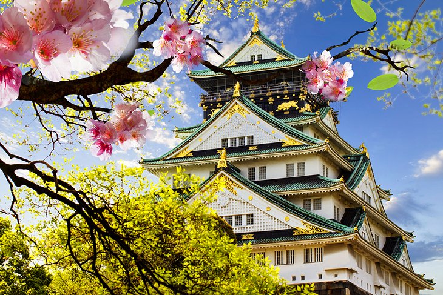
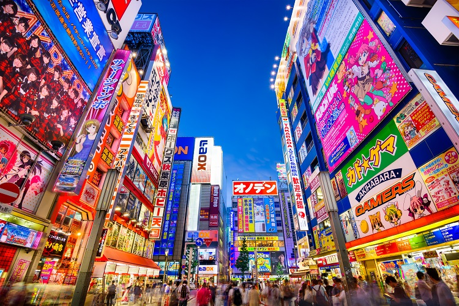
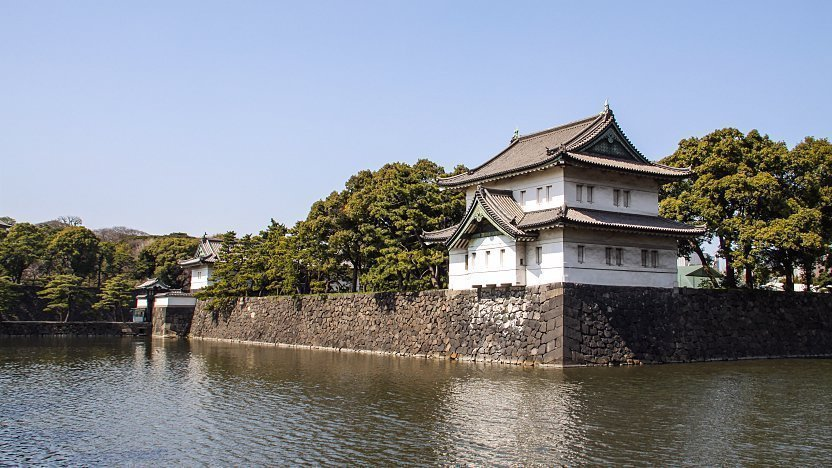

4
Main Islands
120M+
People
Top 5
World Economy
Fuji
Prominent Landmark
An island nation in East Asia, where ancient tradition meets modern technology.
Japan is made up of four main islands: Honshu, Hokkaido, Kyushu and Shikoku. The country is known for its mountainous terrain, with Mount Fuji standing out as a prominent landmark.
Japan has a rich cultural heritage, combining traditional arts and cuisine such as sushi and ramen with modern elements. Its history spans from ancient times through the era of the samurai to the rapid modernization of the Meiji Restoration.
Today, Japan is one of the world's largest economies and is recognized for its advancements in technology and its major industries, including automobiles and electronics. With a population of more than 120 million, it also faces challenges such as an aging population.

Capital
Tokyo
Language
Japanese
Currency
Japanese Yen
Popular Seasons
Spring and Autumn

Osaka
A famous historical landmark known for its white exterior and golden roof. The castle is surrounded by cherry blossoms in spring, which are often associated with Japan.

Tokyo
Akihabara, known as "Akiba," is a lively Tokyo district famous for electronics and anime. It is a hub for unique subcultures, offering a colorful blend of modern technology and Japanese entertainment.
Spring
Cherry blossoms line a canal in Japan, lit by lanterns after dark for a magical and romantic atmosphere. Blossom season typically runs from late March to early April in many parts of the country.
Chiba
Oyama Senmaida is a breathtaking landscape of terraced rice paddies in Chiba Prefecture. Its name refers to its roughly 1,000 small paddies, a testament to the ingenuity and hard work of Japanese farmers.
Shirakawago's historic village, the Kerama Islands' pristine waters and the majestic Imperial Palace.
Gifu
A historical village famous for its traditional gassho-zukuri farmhouses, designed to withstand heavy snowfall. It is a UNESCO World Heritage site known for its unique architecture.
Okinawa
Located west of Okinawa's main island, the Kerama Islands are known for their coral reefs and clear blue waters, a haven for divers and beach lovers with vibrant marine life.

Tokyo
The primary residence of the Emperor of Japan. Surrounded by beautiful gardens, it stands as a symbol of Japan's monarchy and rich cultural heritage.